100% 무료 견적
사진만 보내주세요. 현장 방문 전 비용은 없고, 묻지마 계약 강요도 없습니다. 견적은 부담 없이, 결정은 천천히 하셔도 됩니다.
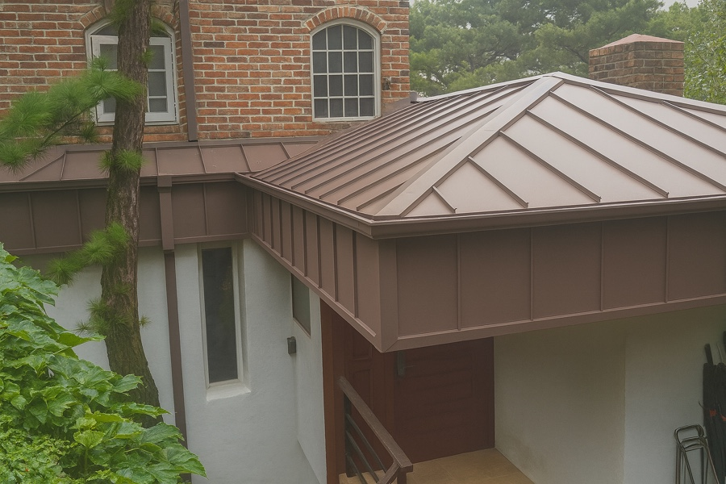
ZINC ROOFING & EXTERIOR CRAFT — SEOUL / GYEONGGI
징크 · 슁글 · 데크 · 외장 전문 — SJ징크지붕공사
20년 경력 기술자가 처음부터 끝까지 직접 시공합니다. 서울·경기, 전국 시공 가능.
ABOUT — PHILOSOPHY
01겉이 아니라,
구조를 봅니다.
비가 올 때마다 새는 집이 있습니다. 실리콘으로 막고, 또 막아도 다음 장마에 다시 샙니다. 원인은 대부분 겉에 있지 않습니다. 보이지 않는 곳, 구조에 있습니다.
SJ징크지붕공사는 지붕을 덮는 일이 아니라 지붕을 세우는 일이라고 생각합니다. 그래서 모든 공사의 시작은 방수시트입니다. 징크 판넬 아래에 들어가는, 완성 후에는 아무도 보지 못하는 그 공정을 저희는 가장 정직하게 시공합니다. 보이지 않는 곳을 대하는 태도가 지붕의 수명을 결정한다고 믿기 때문입니다.
20년, 기술자들이 직접 상담하고 직접 지붕에 올라 처음부터 끝까지 시공합니다. 중간에 손이 바뀌지 않습니다. 잘 지은 징크 지붕은 20~30년, 자재에 따라 100년 이상을 갑니다. 그 시간을 책임질 수 있는 공사만 합니다.
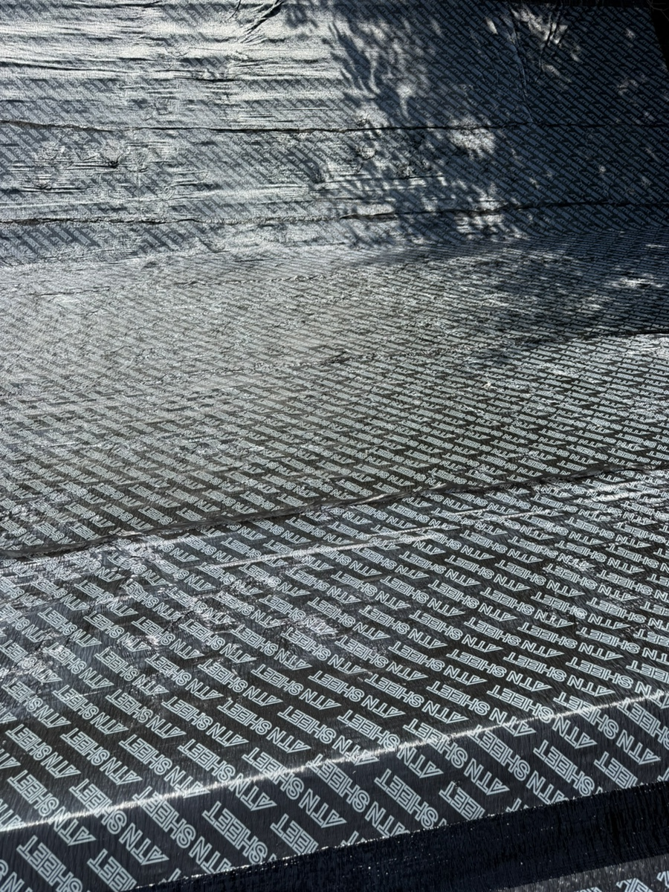
SERVICES — WHAT WE BUILD
02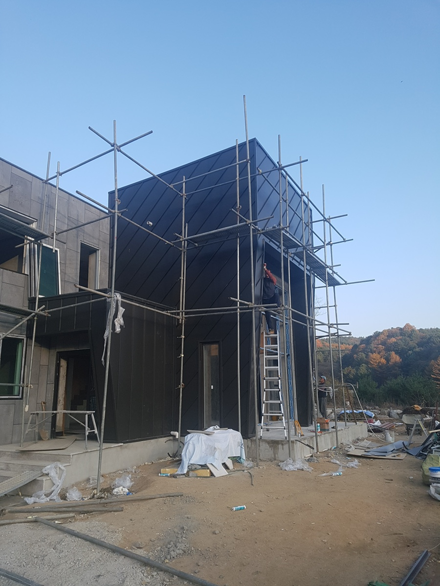
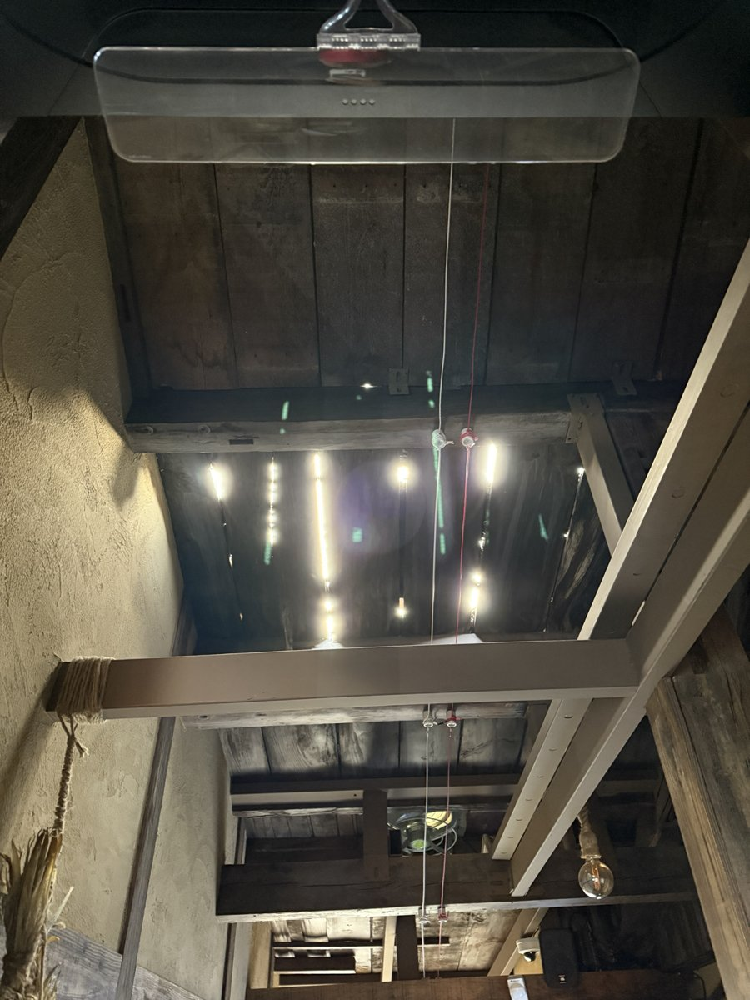
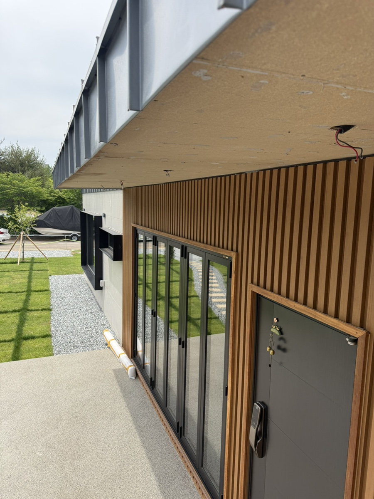
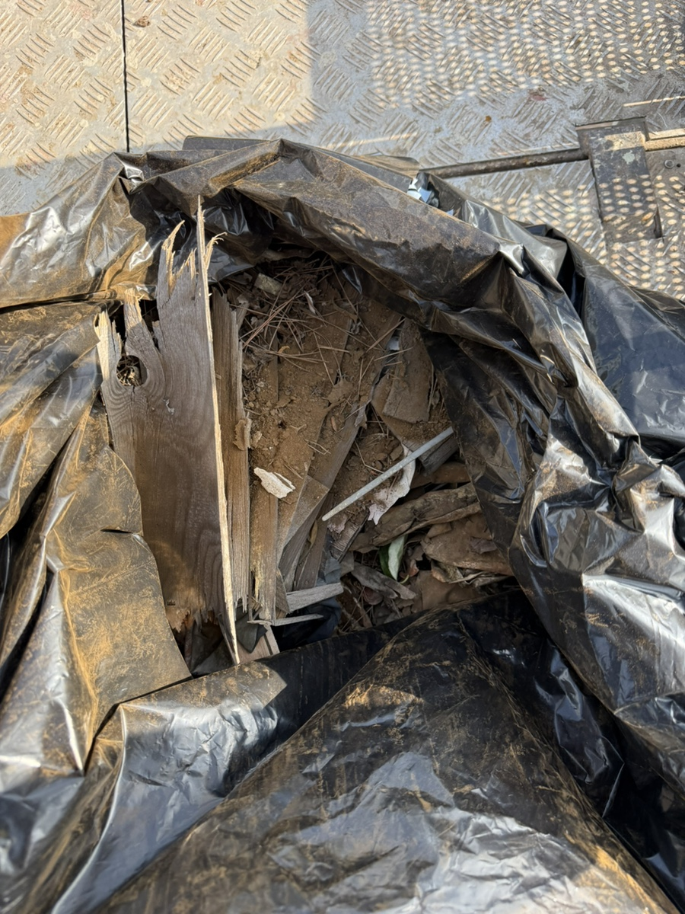
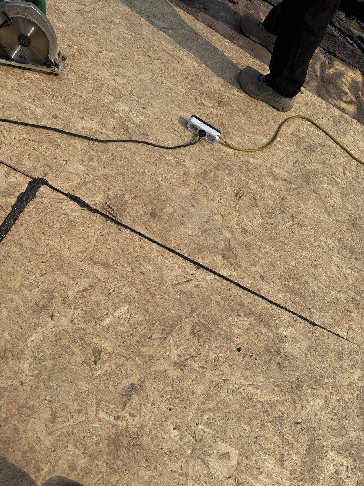
WORKS — SELECTED PROJECTS
실제 시공 현장 사진입니다.
모든 공사는 기술자가 직접 지붕에 올라 마무리했습니다.
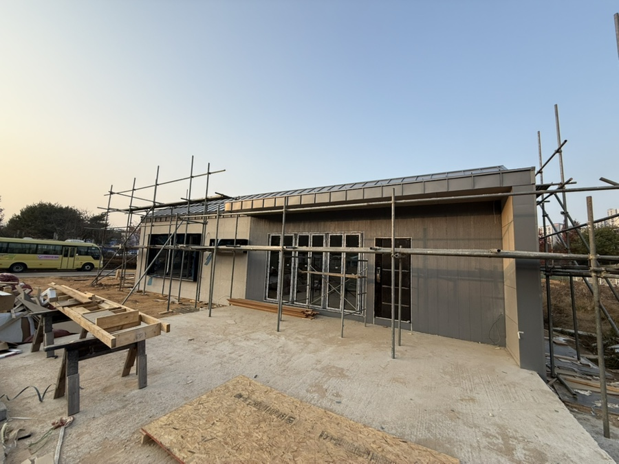

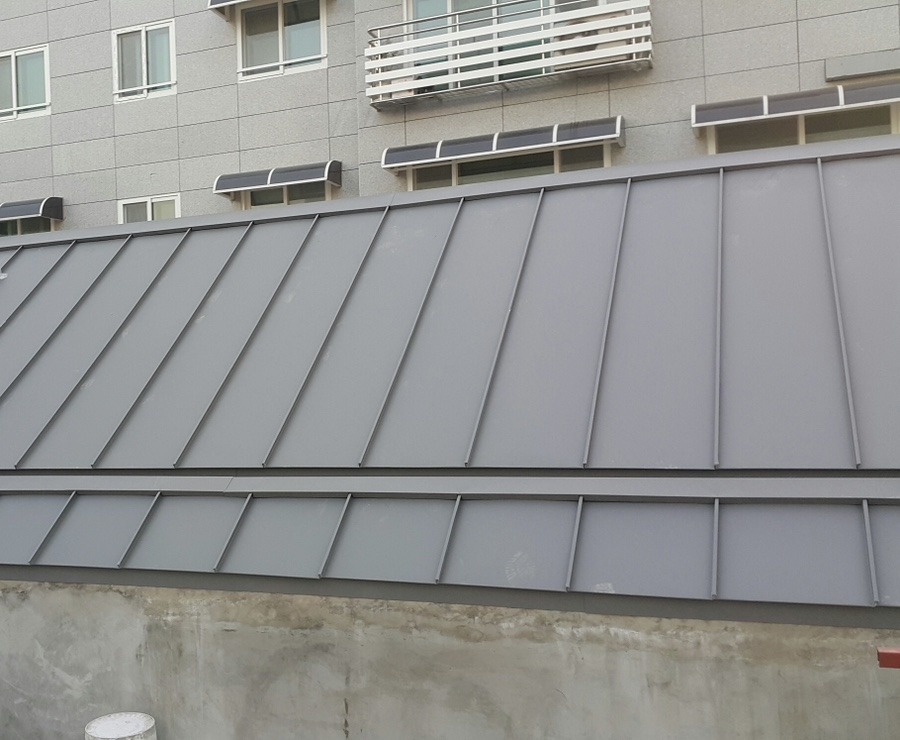
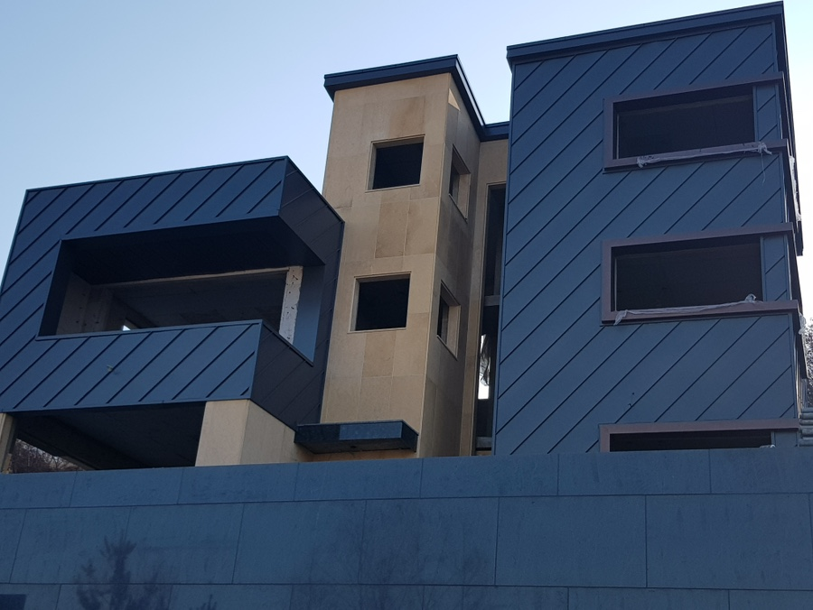
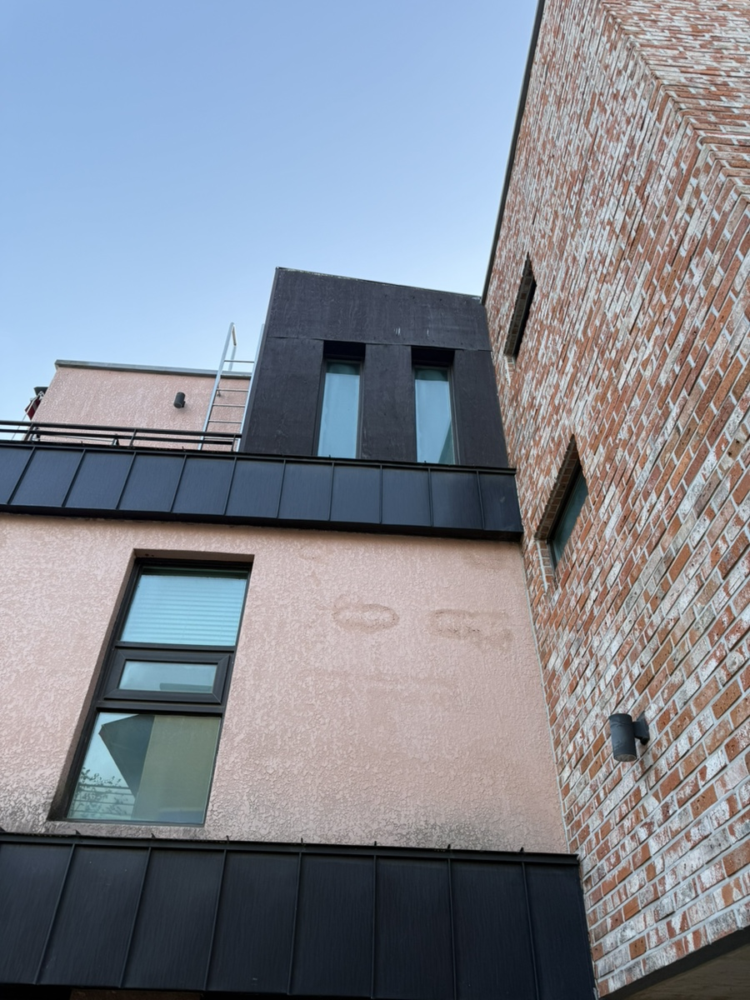
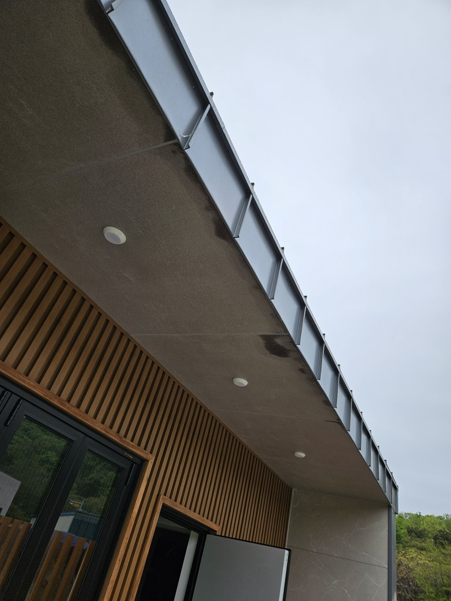
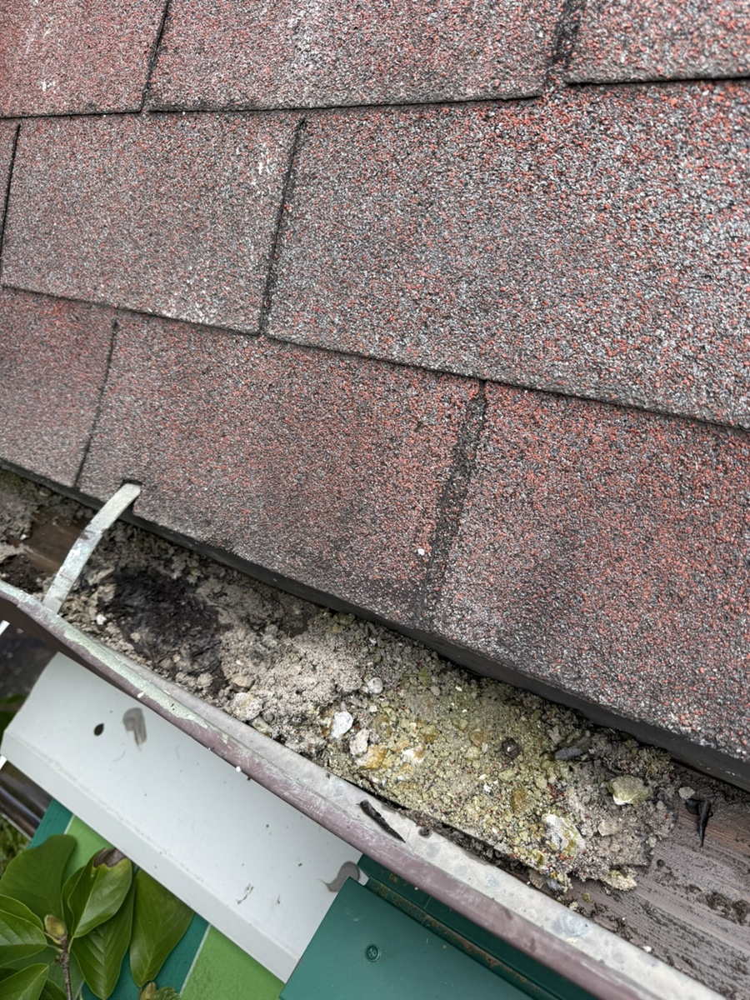
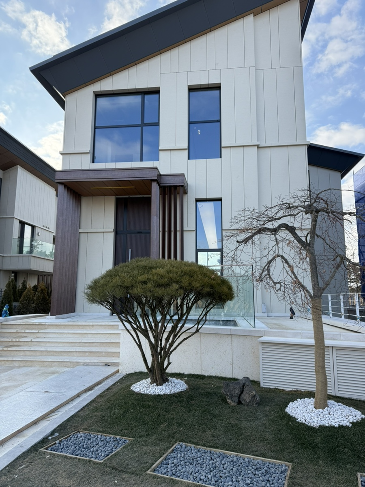
BEFORE / AFTER — REMODELING
03노후주택 철거 → 징크 리모델링. 핸들을 드래그해 비교해 보세요.
AFTER
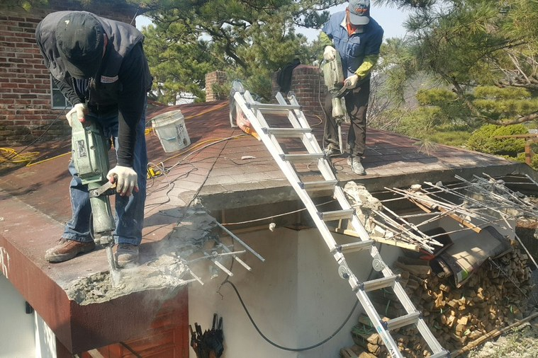
BEFOREPROCESS — HOW WE WORK
04사진만 보내주시면 1차 견적은 무료입니다. 필요한 경우 현장을 직접 보고, 새는 이유와 고쳐야 할 구조를 정확히 진단합니다.
겉재가 아니라 물의 길부터 설계합니다. 지붕 경사, 물매, 홈통 위치까지 계산해 누수가 생길 자리를 원천 차단합니다.
완성 후에는 보이지 않지만, 지붕 수명을 결정하는 가장 중요한 공정입니다. 모든 지붕공사의 기초를 빈틈없이 깝니다.
20년 경력의 기술자가 직접 지붕에 오릅니다. 징크 판넬 한 장, 이음새 하나까지 처음부터 끝까지 같은 손으로 마무리합니다.
공사가 끝나도 관계는 끝나지 않습니다. 방수·단열·AS를 보장하며, 하자 문의는 시공한 기술자가 직접 응대합니다.
WHY SJ — PROMISE
05사진만 보내주세요. 현장 방문 전 비용은 없고, 묻지마 계약 강요도 없습니다. 견적은 부담 없이, 결정은 천천히 하셔도 됩니다.
전화를 받는 사람이 지붕에 올라가는 사람입니다. 중간 수수료도, 전달 과정의 왜곡도 없이 대표·기술자와 바로 상담합니다.
실리콘 땜질로 미루지 않습니다. 새는 이유를 구조에서 찾아 근본적으로 해결하는 것, 그것이 저희가 말하는 누수 제로입니다.
방수·단열·AS를 보장합니다. 20년을 지붕 위에서 일한 이름에 자존심을 겁니다. 공사 후에도 같은 번호로 찾아주세요.
CONTACT — FREE ESTIMATE
비가 예볼 때마다 지붕부터 걱정된다면,
이제 그 걱정, 저희에게 넘기세요.
사진만 보내주세요. 1차 견적은 무료입니다.
브로커 없이, 시공할 기술자가 직접 답합니다.